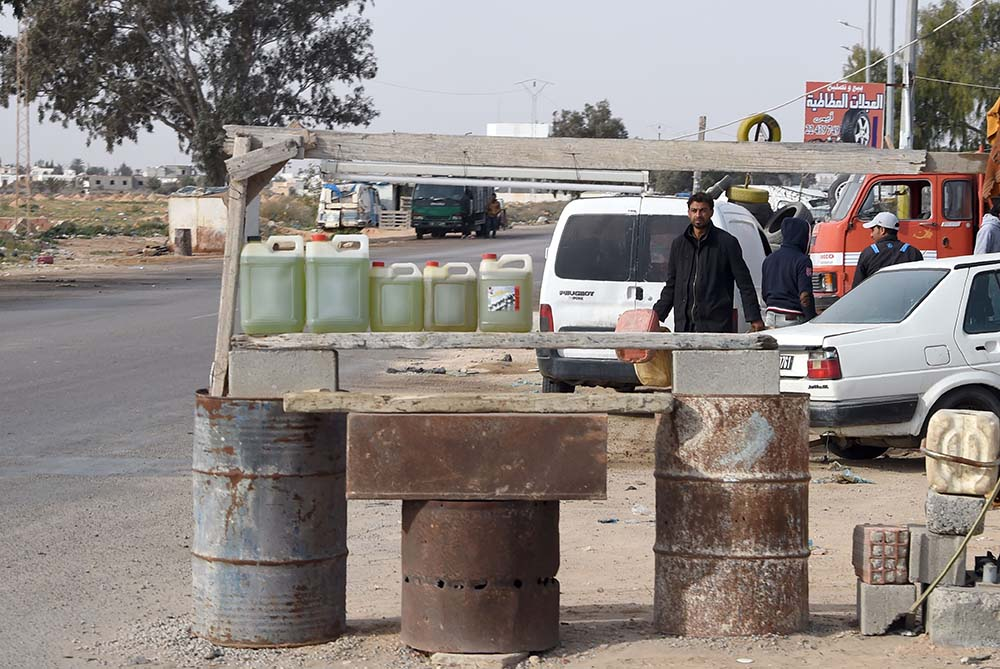

Understanding Tunisia’s domestic climate after the revolution, especially from 2011 to 2013, is essential to understanding the rise of jihadi-salafi violence in ensuing years. Tunisia’s transitional governments struggled to maintain order while managing high expectations from a population eager for economic and political transformation. Various segments of Tunisian society had different and frequently contradictory visions for what that transformation would look like. What all visions had in common, however, was an expectation of positive change, and what the champions of these visions had in common was a newfound freedom to speak out and organize, with little interference from security forces.
It was this domestic environment that allowed jihadi-salafi ideology and activity to spread, inspiring and mobilizing Tunisian fighters on a scale that soon dwarfed past waves of jihadi-salafi recruitment.
The new political openness and commitment to freedom of speech after the revolution allowed groups of all ideological stripes to organize freely and build constituencies in an open market of ideas. Civil society leaders reported that between 7,000 and 10,000 new organizations of different sizes, including unions, associations, and professional groups, registered with the government in the first 10 months after the revolution. Over 100 political parties representing an ideological and political kaleidoscope formed in the same period. More than 200 new print publications hit Tunisian stands by 2012, adding to a diverse chorus of newly unconstrained media voices.
The new political openness and commitment to freedom of speech after the revolution allowed groups of all ideological stripes to organize freely and build constituencies in an open market of ideas.
It was in this context that salafists and jihadi-salafists, who had generally remained underground before the revolution, emerged and preached openly. Salafists began recruiting in poor and working-class urban areas but also appeared in the media, debating religion and politics in public venues. This environment also allowed more competition between different Islamist groups. Several salafi political parties registered for elections, while Ansar al Shari`a, the largest jihadi-salafi movement, held conventions that drew 1,000 people in 2011 and as many as 10,000 the next year, while overall membership reportedly swelled to between 10,000 and 20,000.
Immediately following the revolution, new freedoms extended to political prisoners, including many jihadi-salafists imprisoned under Ben Ali. As part of its effort to break with the past, Tunisia’s first transitional government pardoned hundreds of political prisoners with a general amnesty law in February 2011, among them jihadi-salafists.
Some of the released jihadi-salafists had military training or combat experience with al Qaeda–linked groups. Others were petty criminals who had embraced salafi narratives of redemption while in prison. Seifallah Ben Hassine, the charismatic leader of the Tunisian Combatant Group, was released in 2011 and went on to found Ansar al Shari`a. Other jihadists who had been in exile returned from abroad, often as heroes in their local communities. Among them was Tarek Maaroufi, who joined with Ben Hassine in establishing Ansar al Shari`a.
As a result, hundreds of trained jihadists were out on Tunisian streets and reviving their old networks across Tunisia, Europe, and the Middle East. By August 2012, Tunisian security forces estimated that approximately 500 jihadi-salafists with military training or experience resided in Tunisia.
By August 2012, Tunisian security forces estimated that approximately 500 jihadi-salafists with military training or experience resided in Tunisia.
During this period, previous networks for recruiting and transporting local jihadists were also revitalized as irregular traffic between Tunisia and its neighbors surged. The largest boom was between Tunisia and an increasingly chaotic Libya, a route that would become a major conduit for Tunisian fighters bound for Syria and Iraq and for Libya’s own jihadi bastions.
Jihadi-salafists in Tunisia did not immediately threaten the state with direct violence. While an insurgency in the Mount Chaambi area was percolating, jihadi-salafists in urban areas drew on the revolutionary fervor and activist spirit characteristic of Tunisia’s broader political environment to pursue a new path and target a younger generation. This approach evolved into a new breed of hybrid jihadi-salafism that adhered to al Qaeda’s principles of violence but prioritized social and political activism to reach more mainstream audiences. Prominent leaders from this camp were influenced by al Qaeda’s failures to mobilize masses in previous decades.
... jihadi-salafists in urban areas drew on the revolutionary fervor and activist spirit characteristic of Tunisia’s broader political environment to pursue a new path and target a younger generation.
The largest and most influential of the hybrid jihadi-salafi groups, Ansar al Shari`a, developed an avid youth base in working-class and low-income neighborhoods through grassroots outreach, charitable activities, and proselytization campaigns. Its leaders encouraged Tunisian youth to join the Syrian jihad against the Assad regime but preached that Tunisia was a land of da`wa rather than a land of jihad. Although many Tunisians viewed these actors as a political and social threat because of their intolerance, vigilante violence, harassment of liberals, and destruction of Sufi shrines, the government banned them only in the summer of 2013, after they were implicated in two political assassinations. This hybrid jihadi-salafism was a unique consequence and outgrowth of Tunisia’s particular experiences following the revolution.
Tunisia’s religious authorities were ill-prepared to combat salafi and jihadi-salafi ideology and messaging in a more open environment after over a half-century of state-imposed secularism. In the decades prior to the revolution, religious training for Tunisian clerics and religious education for youth fell into steady decline under the rule of President Habib Bourguiba and Ben Ali. In one of the most symbolic examples of the religious authorities’ disempowerment, the government stripped Tunisia’s venerated Zaytouna Mosque of the educational functions that it had performed as a center of Islamic learning since the eighth century. These policies created a religious vacuum that Islamists, including salafists and jihadi-salafists, were eager and well placed to fill after the revolution.
Tunisia’s religious authorities were ill-prepared to combat salafi and jihadi-salafi ideology and messaging in a more open environment after over a half-century of state-imposed secularism.
State control over religious space evaporated with the dissolution of the Ben Ali regime in 2011. Many state-appointed imams and teachers were evicted from their posts and replaced by salafists and jihadi-salafists, a substantial number of whom had little or no religious education or training, including in prominent mosques in the capital. By the end of 2011, the Ennahda-led Ministry of Religious Affairs stated that salafists controlled about 400 of Tunisia’s roughly 5,000 mosques and that of those 50 were controlled by jihadi-salafists. The actual number could have been higher than official estimates.
Jihadi-salafists were therefore able to occupy both physical and ideological space after the revolution, which gave them platforms to influence many young people’s religious ideas. While salafism has relatively shallow scholarly roots, it offers a simple, clear message of authenticity and righteousness that appeals to many. In the years after 2011, salafism also represented a form of rebellion against the authority of an out-of-touch religious establishment in a way that struck many youth as closer to the spirit of the Arab uprisings than falling in line with state-sanctioned preachers and religious institutions.
Another factor that allowed jihadi recruitment to thrive was the ambiguous stance of Tunisia’s postrevolutionary governments toward salafists and jihadi-salafists on the one hand and the gathering fight in Syria on the other. The Ennahda-led Troika government that came to power in November 2011 was reluctant to rein in jihadi-salafi groups until after they had laid infrastructure and expanded their bases of support.
As the country’s largest political Islamist movement and one that had been forcefully suppressed under Ben Ali, Ennahda had ambitions to represent all Islamists. Ennahda itself is a large and heterogeneous movement encompassing a spectrum of perspectives ranging from Sufi-leaning adherents to conservative pro-salafists. Ennahda leaders initially viewed salafi youth as misguided but ultimately reconcilable and in need of protection more than vilification.
Ennahda hoped to temper salafists by co-opting them into the political system, and proved reluctant to confront jihadi-salafists until violence in Tunisia had worsened significantly. Ennahda’s leaders were also conscious of the fact that after the revolution, meaningful space for Islamism existed for the first time in decades. As a result, Ennahda was inclined to seek the inclusion of a wide range of Islamist voices in Tunisia and define a new Tunisian Islamic identity that would be promoted throughout the country.
Ennahda hoped to temper salafists by co-opting them into the political system, and proved reluctant to confront jihadi-salafists until violence in Tunisia had worsened significantly.
Since the Ennahda-led Troika government left power, Ennahda’s approach to political Islam has evolved. In its May 2016 party congress, Ennahda announced that it was separating its religious and political activities into two separate entities. This would essentially allow the political party to focus on legislation and political activity while Ennahda affiliated NGOs and civil society groups would pursue religious and social activities, including education. The ultimate impacts of the announced separation on Ennahda’s policy agenda and the debate over religion and public life in Tunisia more broadly remain to be seen.
Tunisia’s government also demonstrated ambivalence toward the departure of Tunisians joining the rapidly growing fight against the Assad regime in 2011–12. The first meeting of a leading Syrian opposition body, the Syrian National Council, convened in Tunis in 2011, and although the Tunisian government insisted the invitation was not an official one, Tunisia’s newly elected president Moncef Marzouki attended the event. Some officials went beyond expressing sympathy for Syrian revolutionaries’ cause to vocalizing tacit support for foreign nationals, including Tunisians, joining in the fight. Minister of Religious Affairs Noureddine Khademi actively endorsed the Syrian jihad before he took office in December 2011, speaking of a duty to “support our Syrian brothers” suffering under the repression of the Assad regime. These statements bolstered the notion that waging jihad in Syria was a sanctioned and even noble endeavor.
The turmoil and uncertainty that gripped the country following Ben Ali’s departure also hampered Tunisia’s security forces in the ensuing years. Political pressures and intense scrutiny of the security forces’ past actions supporting the Ben Ali regime led to a series of shakeups in early 2011. Many security officials feared prosecution for their role in supporting the previous regime. Forty-two senior officers were forced out, while over 2,000 who had been dismissed in the decade before 2011 were rehired. A hiring wave to support the forces’ expansion brought large numbers of young officers into the force, with little training.
The turmoil and uncertainty that gripped the country following Ben Ali’s departure also hampered Tunisia’s security forces in the ensuing years.
Tension between the Ennahda-led Troika government and the security forces also prevented a unified government response to rising violence. In December 2011, an Islamist politician imprisoned for 15 years under Ben Ali became the interior minister, compounding tension and mistrust between the security forces and the government. The elected government was never able to assert oversight of the powerful interior ministry which fiercely guarded its autonomy.
Without a clear mandate and in the face of substantial leadership turnover, the security services’ response to gathering risks was limited. Meanwhile, the Tunisian military and National Guard were on the frontlines of the rural insurgency that grew at the end of 2012 and throughout 2013. The result was an incoherent government policy toward violence, incitement, and radical activity as well as a lack of coordination and information sharing between various institutions responsible for security.
While jihadi-salafists took advantage of Tunisia’s open political and ideological climate, they also capitalized on relatively free movement and travel from 2011 until 2013 which allowed aspiring foreign fighters to leave the country and arms to flow in. Tunisians do not require visas for travel to Turkey or Libya, and nonstop flights from Tunis to Istanbul made travel to Syria through Turkey relatively accessible. Until Tunisian authorities began tightening restrictions on young travelers in early 2013, reaching Syria could be a fairly straightforward process of boarding a commercial flight to Turkey and then crossing the Turkish-Syrian border.
As Syria slid toward conflict, porous land borders with Libya and Algeria provided another transport channel for Tunisian militants as well as a supply route for weapons, further fueling the capacities of rural insurgent groups within the country. Generations-old smuggling routes and networks along the borders, dominated by tightly-knit tribal and family associations, were important in facilitating fighter transport and arms movements.
These smuggling networks play an important role in the informal economies of border areas. The lack of economic opportunities and employment along the frontiers means that thousands of families are sustained by the trade in licit and illicit goods. Previous governments have largely tolerated the smuggling of fuel, food, medicine, and a range of other consumer goods to ensure a source of livelihood in border communities. Heavily subsidized goods from Algeria and Libya, including fuel, are smuggled into Tunisia, while consumer goods and agricultural products are often smuggled from Tunisia across the border. Smuggling networks also provided intelligence to security forces in exchange for freedom of operations.
Yet, the breakdown of border security created a boom for smugglers who could command higher profits from smuggling weapons—which are abundant in Libya—and people. This interaction between militant groups and smuggling cartels directly threatens Tunisia’s security at a vulnerable time. Without addressing the deeper economic challenges of the informal economy and lack of opportunities in border areas, smuggling of weapons, illicit goods, and militants will continue, undermining Tunisia’s security.
Next: The Puzzle | Radicalization